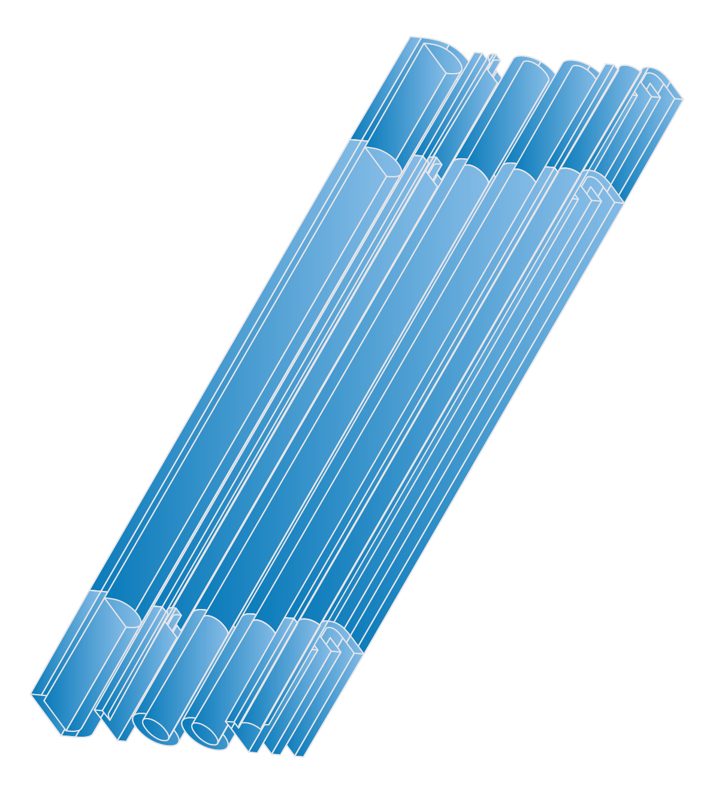
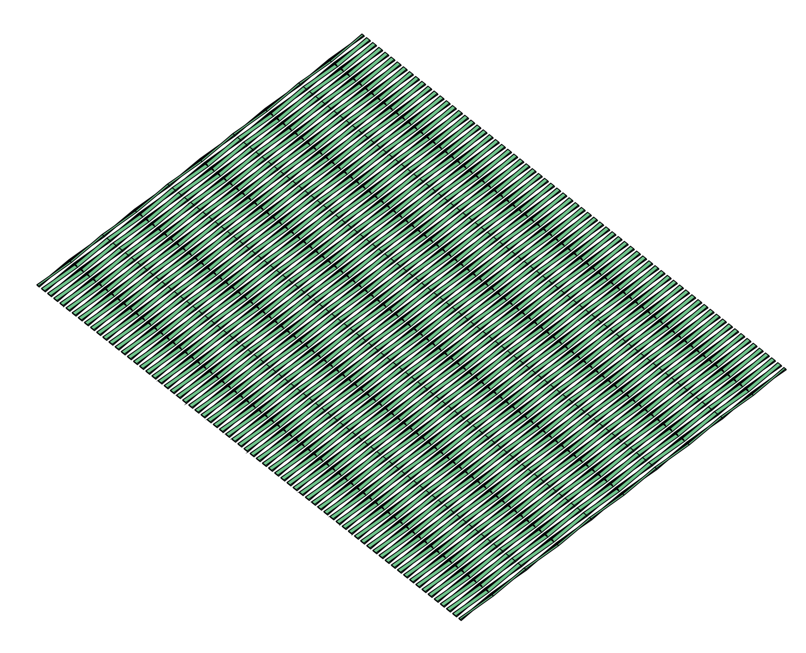

Droom
 Geplaatst op doorSlierten mist zwerven rond mijn benen. Net zat ik nog in Bus 21. Het was warm, zweet parelde langs mijn slapen, mijn zoon sliep. Nu loop ik over een smal pad langs eindeloos diepe bouwputten. Een heipaal beukt zich een weg naar het binnenste van mijn oor. Lachende Japanners passeren mij. Een van de Japanners verandert in een vrouw. ‘Waar is het postkantoor,’ vraagt de vrouw. ‘Dat bestaat niet meer,’ zeg ik. ‘We werken hier alleen nog maar met postduiven.’ Een auto met een Frans nummerbord en op het dak een opblaasbare Smurf met een enorme penis rijdt achteruit. De vrouw rent er achteraan. De auto en de rennende vrouw worden kleiner en kleiner. Ik kijk voor me. Daar staat het postkantoor.
Binnen wordt ik ontvangen door Raymond Queneau. Hij lijkt verdacht veel op Harry Mulisch. Dat zeg ik tegen ’m. Queneau neemt een trekje van zijn pijp. ‘Dat komt,’ zo zegt hij mij, ‘omdat ik onvindbaar ben.’ ‘Maar ik heb u toch gevonden,’ antwoord ik. ‘Niets is wat het lijkt,’ zegt Queneau. Hij kijkt mij doordringend aan. ‘Walk like an Egyptian,’ zingt hij, en doet het dansje. ‘Het gaat er niet om wat je zingt, maar hoe je erbij danst,’ zegt een medewerker van het postkantoor. Op het Tahrirplein probeer ik een paar schoenen voor mijn zoon te kopen, maar het zoeken wordt mij belet door duizenden betogers die denken dat mijn zoontje Mohammed El Baradei is. Ze nemen hem op de schouders, mijn zoontje lacht. Daar komen mannen op kamelen aan.